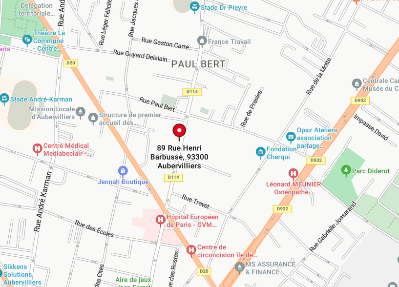

Présentation
TL Informatique est une Société à Responsabilité Limitée (SARL) domiciliée à Aubervilliers en Seine Saint-Denis, proposant une vente de matériels informatique de toutes catégories.
Fondée en 2010 par Lucas CHAROY et Timéo PUGNALE, experts en infrastucture réseau avec BAC+5.

| Jour | Horaires |
|---|---|
| Lundi | 9h/12h, 14h/18h |
| Mardi | 9h/12h, 14h/18h |
| Mercredi | 9h/12h, 14h/18h |
| Jeudi | 9h/12h, 14h/18h |
| Vendredi | 9h/12h, 14h/18h |
| Samedi | 9h/12h, Fermé |